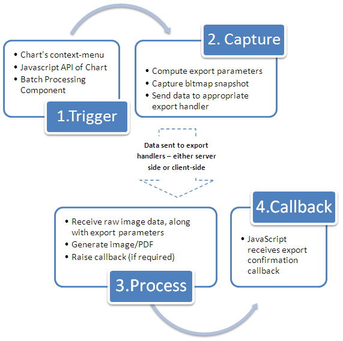

Exporting Charts as PDF or Images > How it works? |
The entire FusionCharts export process is a multi-step process involving various elements, including:
These elements combined provide an elegant approach that allow you to export FusionCharts as images. |
| FusionCharts is Flash. So how does it generate an image? |
Yes - we agree that FusionCharts is a set of SWF files that take in XML data and render charts. It uses Adobe Flash Player to do the same. Remember that all of this happens in your browser - the SWF is downloaded, XML is downloaded and then parsed and finally rendered as a chart. So, after the chart has rendered in your browser, you can now invoke the export process of FusionCharts using either context menu of chart, or JavaScript API. This is called the Trigger phase. When you do this, the following processes take place:
The entire process can be visualized as under: |
|  |
We wish to lay emphasis on one point again - Whenever a chart needs to export as image/PDF (either server-side or client-side), it first necessarily needs to render itself in browser. Once it has rendered in the browser, you can then invoke the JavaScript API to automatically start the export process, without needing any user action. While the list looks scary at the first sight, let us assure you that setting up all these things is just a matter of minutes, involving just copying-pasting some files here and there, and configuring your XML for export related parameters. You do NOT need to write any of your own code to handle any of this - we've done the hard work so that you can relish it! With that assurance, let's first quickly learn the various terminologies associated with FusionCharts Export process for once and for all! |